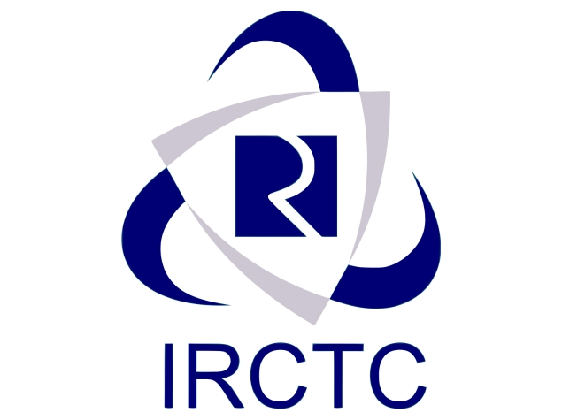
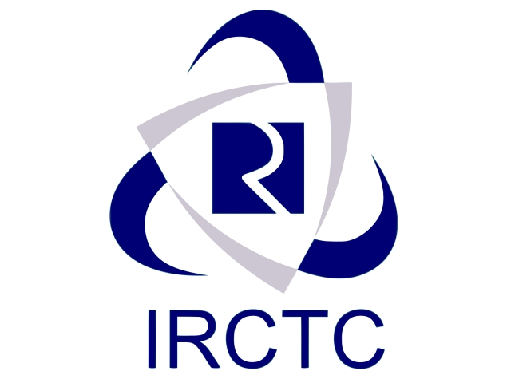

INDIAN RAILWAYS

INDIAN RAILWAYS

Safety | Security | Punctuality
The first railway proposals for India were made in Madras in 1832. The country's first train, Red Hill
Railway (built by Arthur Cotton to transport granite for road-building), ran from Red Hills to the Chintadripet
bridge in Madras in 1837. In 1845, the Godavari Dam Construction Railway was built by Cotton at Dowleswaram
in Rajahmundry, to supply stone for the construction of a dam over the Godavari River. In 1851, the Solani
Aqueduct Railway was built by Proby Cautley in Roorkee to transport construction materials for an aqueduct over
the Solani River.
India's first passenger train, operated by the Great Indian Peninsula Railway and hauled by three steam
locomotives (Sahib, Sindh and Sultan), ran for 34 kilometres (21 mi) with 400 people in 14 carriages on 1,676 mm
(5 ft 6 in) broad gauge track between Bori Bunder (Mumbai) and Thane on 16 April 1853. The Thane
viaducts, India's first railway bridges, were built over the Thane creek when the Mumbai-Thane line was extended
to Kalyan in May 1854. Eastern India's first passenger train ran 39 km (24 mi) from Howrah, near Kolkata, to
Hoogly on 15 August 1854. The first passenger train in South India ran 97 km (60 mi) from
Royapuram-Veyasarapady (Madras) to Wallajah Road (Arcot) on 1 July 1856.
Read More

Indian Railway operates tourist train or coach services on popular tourist circuits in different regions of the
country. The service offers tour packages inclusive of rail travel, local transportation, accommodation, food
and guided tours. IR offers various tourist services in this segment including Luxury tourist trains, Semi
luxury trains, Buddhist special trains, Bharat Darshan trains, Aastha Circuit trains, and Steam trains.
The Palace on Wheels is a luxury-train service, frequently hauled by a steam locomotive, to promote tourism in
Rajasthan. The train has a seven-night, eight-day itinerary on a round trip from New Delhi via Jaipur, Sawai
Madhopur and Chittaurgarh, Udaipur, Jaisalmer, Jodhpur, Bharatpur and Agra.
Royal Rajasthan on Wheels covers a number of tourist destinations in Rajasthan. The seven-day, eight-night tour
is a round trip from New Delhi's Safdarjung station via Jodhpur, Udaipur and Chittaurgarh, Ranthambore National
Park and Jaipur, Khajuraho, Varanasi and Sarnath, and Agra.
Maharajas' Express, a luxury train operated by the Indian Railway Catering and Tourism Corporation (IRCTC), runs
on five routes to about 12 destinations across northwest and central India (centered around Rajasthan) from
October to April.
The Deccan Odyssey covers tourist destinations in Maharashtra and Goa. Its seven-night, eight-day tour begins in
Mumbai and stops at Jaigad Fort, Ganapatipule and Ratnagiri, Sindhudurg, Tarkarli and Sawantwadi, Goa, Kolhapur
and Pune (Day 5), Aurangabad and Ellora Caves, and Ajanta Caves and Nashik.
The Golden Chariot is a luxury train service running on two tours: Pride of the South and Splendor of the
South.
The Mahaparinirvan Express, an air-conditioned service also known as the Buddhist Circuit Train, is run by the
IRCTC for Buddhist pilgrims. Its seven-night, eight-day tour begins in New Delhi and visits Bodh Gaya, Rajgir
and Nalanda, Varanasi and Sarnath, Kushinagar and Lumbini, Sravasti, and the Taj Mahal.
The Fairy Queen, a tourist attraction also known as the world's oldest operating steam engine, hauls a luxury
train from Delhi to Alwar.
Read More